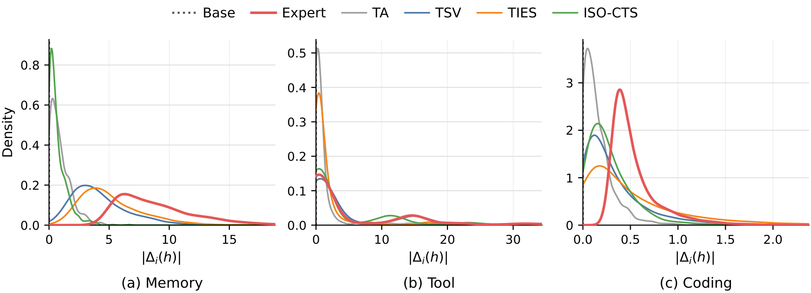
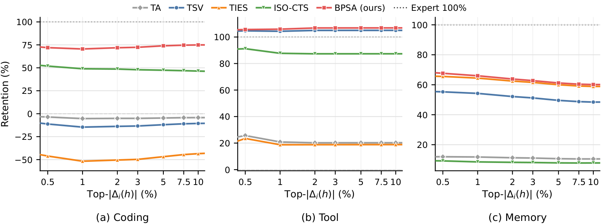
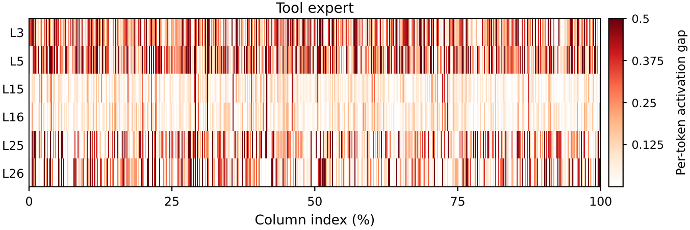

Pre-release · Preprint
We propose Policy-Shift-Guided Spectral Alignment (PSA), a retraining-free method for merging RLVR post-trained language-model experts by guiding spectral subspace selection with token-level expert–base policy shifts.
We first show that existing SFT-oriented merging techniques under-preserve the sparse, directional changes in next-token probabilities that distinguish RLVR experts from the pretrained base. To address this, PSA scores calibration tokens by expert–base probability difference under the same prefix, and converts probability-shift-weighted input activations into column weights. These weights define a weighted SVD objective that prioritizes update directions active on high-shift tokens. After low-rank truncation, PSA applies cross-expert polar alignment to the truncated task-vector bases and restores each expert's per-layer Frobenius scale before aggregation.
Experiments on Qwen2.5-7B and Qwen3-1.7B across three RLVR tasks show that PSA consistently outperforms strong merging baselines while preserving expert-level capabilities in a unified model.
RLVR updates concentrate in sparse, directional log-probability shifts at a small set of tokens. Standard SFT-oriented merging methods that operate on global parameter geometry under-preserve these shifts.

Figure 2a. Distribution of per-token |Δlogp| (expert vs base) on calibration rollouts. RLVR experts concentrate probability shifts on a small fraction of tokens.

Figure 2b. Tail-token projection percentage across three RLVR tasks (in-domain). Most of the policy shift mass lies outside the SVD top components used by spectral baselines.
For every Linear layer ℓ and RLVR expert i:
w[t] = |Δlogp[t]|α.Σt w[t]·|x[t,c]| via forward hooks on each
Linear, then correct by ‖W[:,c]‖₂ to restore the
row/column symmetry of |W·x|.Dc, decompose
τi·Dc1/2 and keep the
smallest Ki singular components covering
90% of the energy, then unscale.Wmerged = Wbase +
Σi αi·τ̃i.
Figure 3. PSA column weights versus naive
‖W[:,c]‖₂ on a tool-RL expert layer. PSA emphasizes columns
whose activations align with high-shift tokens.
We evaluate PSA on two model families. Qwen2.5-7B covers three RLVR tasks — coding, tool-use, long-context memory — across six benchmarks. Qwen3-1.7B covers instruction-following, math (AIME 24/25/26), and search. Best merged result per column is in bold; the highlighted row is PSA. Reference rows are the base model and individual expert checkpoints, included for context.
| Method | Coding | Tool Use | Memory (Recurrent) | Avg. | |||||||
|---|---|---|---|---|---|---|---|---|---|---|---|
| LB | LCB | Live | Non-Live | HotpotQA | SQuAD | ||||||
| ACC | UT | ACC | UT | ACC | ACC | 7K | 14K | 32K | 64K | ||
| Reference Models | |||||||||||
| Base | 37.74 | 48.63 | 28.86 | 44.20 | 74.02 | 86.31 | 57.29 | 53.65 | 65.89 | 59.12 | 59.67 |
| RLVR-Coder | 40.92 | 52.33 | 31.08 | 45.84 | 73.80 | 86.44 | 58.33 | 52.08 | 64.58 | 57.81 | 60.29 |
| RLVR-Tool | 36.28 | 48.28 | 28.50 | 43.58 | 77.05 | 88.06 | 60.42 | 55.73 | 60.68 | 62.24 | 60.49 |
| RLVR-Memory | 37.26 | 48.66 | 29.88 | 45.28 | 75.50 | 86.27 | 78.65 | 78.65 | 76.04 | 78.64 | 66.38 |
| Merging Baselines | |||||||||||
| Task Arithmetic | 36.72 | 48.33 | 29.97 | 44.62 | 77.13 | 88.37 | 67.45 | 60.68 | 72.13 | 69.53 | 63.37 |
| TIES | 38.09 | 49.66 | 31.57 | 46.35 | 76.46 | 88.62 | 74.74 | 75.52 | 76.07 | 76.27 | 66.54 |
| DARE | 40.23 | 51.34 | 32.72 | 47.62 | 73.58 | 85.73 | 75.78 | 76.56 | 74.22 | 77.34 | 66.20 |
| TSV | 38.74 | 50.00 | 31.50 | 46.55 | 77.28 | 88.75 | 75.52 | 73.96 | 75.17 | 73.97 | 66.46 |
| STAR | 39.01 | 50.10 | 31.65 | 46.91 | 75.72 | 88.23 | 75.78 | 73.55 | 73.44 | 74.22 | 66.05 |
| Iso-CTS | 37.89 | 48.24 | 31.19 | 46.12 | 77.05 | 88.65 | 63.28 | 62.50 | 64.06 | 65.62 | 62.53 |
| RAM | 39.26 | 50.36 | 31.24 | 46.79 | 76.31 | 88.08 | 73.70 | 76.82 | 72.63 | 75.52 | 66.26 |
| RAM+ | 37.70 | 49.89 | 31.46 | 47.14 | 76.09 | 88.17 | 76.56 | 76.56 | 74.30 | 74.22 | 66.36 |
| PSA (Ours) | 41.13 | 51.94 | 32.75 | 47.85 | 76.59 | 88.70 | 79.95 | 79.43 | 79.43 | 79.95 | 68.58 |
Table 1. Coding (LB, LCB) reports pass accuracy and unit-test accuracy. Tool Use reports BFCL v4 Live and Non-Live averages. Memory reports RULER HotpotQA and SQuAD at 7K–64K under the Recurrent setting.
| Method | IF | Math | Search | Avg. | ||
|---|---|---|---|---|---|---|
| IFEval | AIME24 | AIME25 | AIME26 | SimpleQA | ||
| ACC | mean@8 | mean@8 | mean@8 | ACC | ||
| Reference Models | ||||||
| Base | 60.79 | 47.50 | 36.25 | 32.90 | 71.28 | 56.98 |
| IF Expert | 64.99 | 48.75 | 35.83 | 35.83 | 75.62 | 60.25 |
| Math Expert | 62.47 | 54.17 | 43.75 | 41.67 | 71.40 | 60.13 |
| Search Expert (Lucy) | 64.15 | 51.25 | 39.58 | 36.67 | 76.77 | 61.14 |
| Merging Baselines | ||||||
| Task Arithmetic | 64.39 | 51.67 | 38.33 | 37.50 | 76.15 | 61.01 |
| TIES | 64.15 | 49.58 | 37.06 | 40.42 | 75.38 | 60.63 |
| DARE | 66.31 | 52.08 | 38.33 | 37.50 | 75.54 | 61.50 |
| TSV | 65.23 | 53.33 | 41.25 | 42.08 | 75.38 | 62.05 |
| STAR | 65.71 | 51.25 | 38.75 | 38.75 | 76.43 | 61.69 |
| Iso-CTS | 64.51 | 50.42 | 33.33 | 39.58 | 74.56 | 60.06 |
| RAM | 65.83 | 51.67 | 37.50 | 39.17 | 72.37 | 60.33 |
| RAM+ | 64.99 | 54.17 | 40.83 | 41.67 | 76.03 | 62.19 |
| PSA (Ours) | 67.31±0.18 | 57.08±0.42 | 41.67±1.82 | 43.33±0.42 | 77.46±0.39 | 64.04±0.30 |
Table 2. IF and Search report ACC; Math reports mean@8 over AIME24/25/26. Avg. is the mean of IF, Math, and Search scores. PSA scores are averaged over three independent runs (±sample std).
@misc{psa2026,
title = {Merging RLVR-Trained Experts via Policy-Shift-Guided Spectral Alignment},
author = {(authors)},
year = {2026},
note = {Preprint},
}